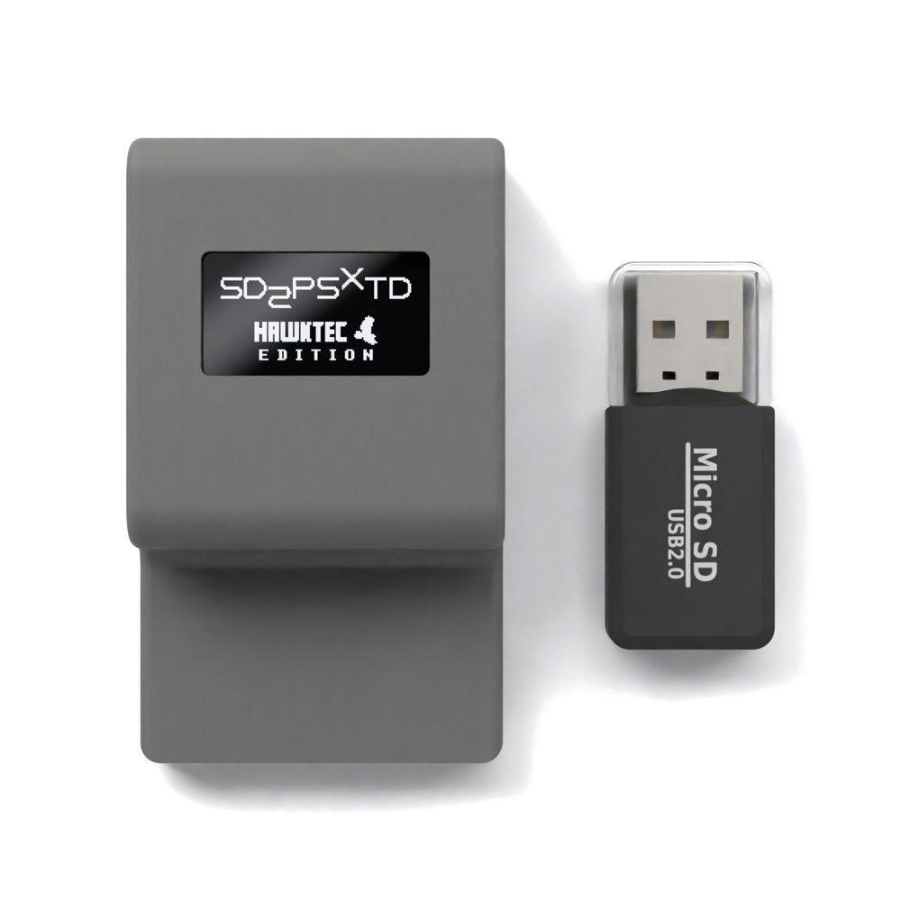
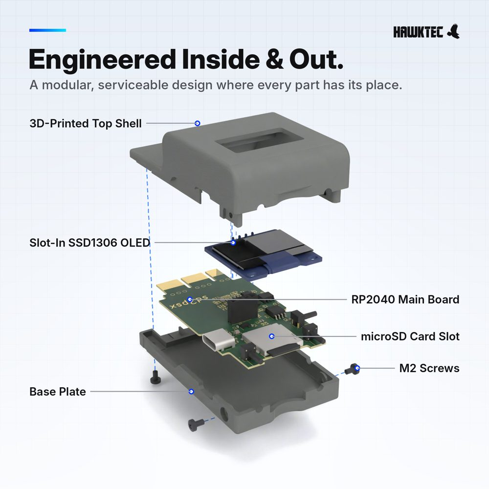
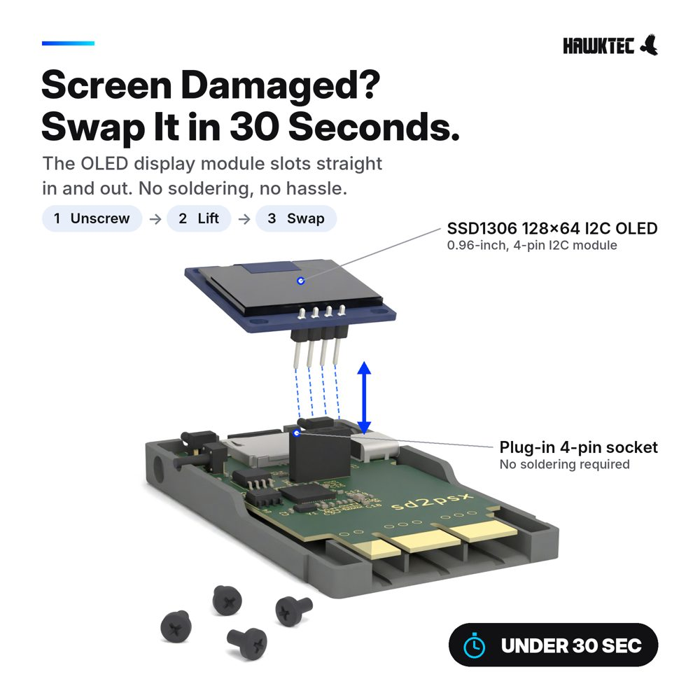
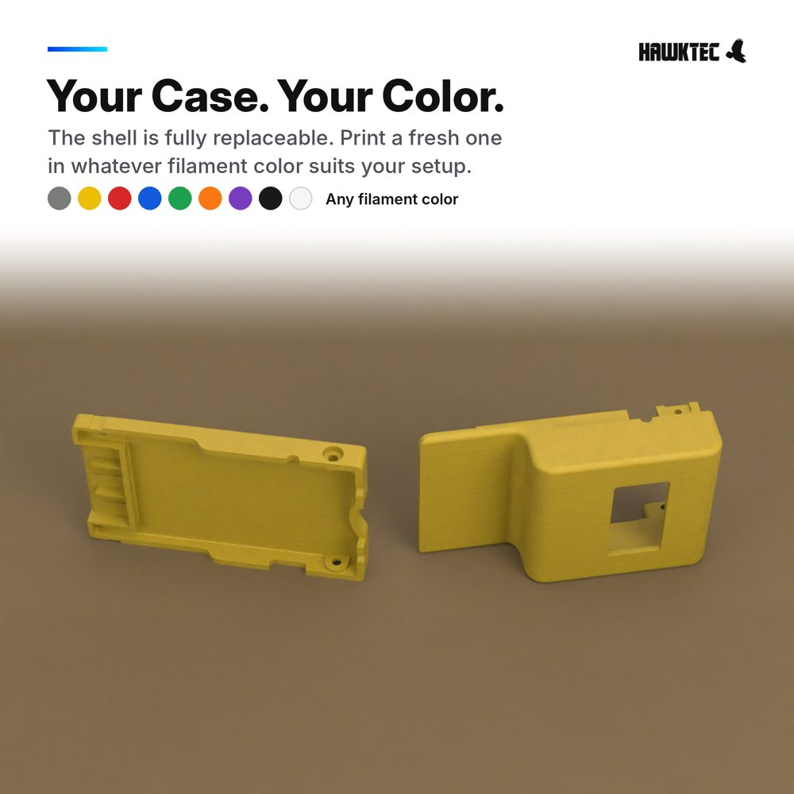
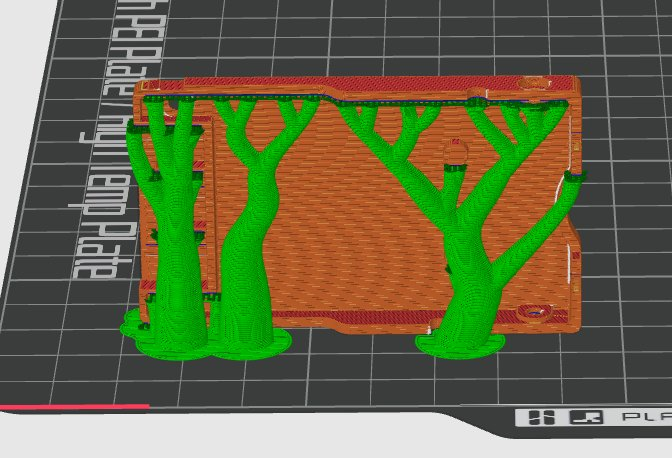
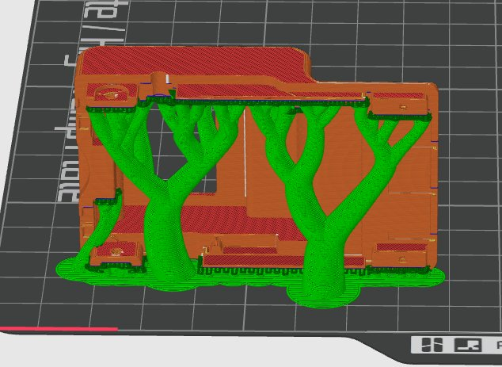

Guide, firmware, and troubleshooting for the HawkTec Modder's Edition SD2PSXTD Gen2 memory card for PS2, PS1, and PS one.
Runs the open-source sd2psXtd firmware, an enhanced build of the original sd2psx by @xyzz. Firmware and community resources are actively maintained.


The SD2PSXTD does not include a micro SD card. The card must be formatted as FAT32. Cards 32 GB or smaller can be formatted directly through your operating system. Cards larger than 32 GB require a third-party formatting tool on Windows — Rufus is a commonly recommended option.
Use a good-quality, name-brand card. Fast cards give smoother game loading, and virtual memory cards larger than 8 MB can corrupt on slow or low-quality cards. Because the card is FAT32, a single game file can't be larger than 4 GB.
You need the MMCE build of Open PS2 Loader. Download it from the OPL MMCE releases page (MMCE Beta 2 or newer). The standard OPL release can't load games from the memory card.
.ISO files into the matching folder: DVD for DVD-based games, CD for CD-based games. CHD and CUE/BIN files are not supported.After the card has been used and OPL has created its folders, your SD root will look something like:
Keep .sd2psx and MemoryCards in the root of the microSD card. MemoryCards holds all of your saves. Back it up by copying it to your PC.
On PS1, you can enable controller combos in PS1 Settings. Hold L1 + R1 + L2 + R2 and press Up/Down for the next/previous card, Right/Left for the next/previous channel, or Select for the boot card.
The SD2PSXTD ships pre-flashed. You only need to do this to update or restore the firmware.
RPI-RP2 will appear. Drag sd2psxtd.uf2 onto it.Newer official releases are on the sd2psXtd download page. Use the sd2psx.uf2 file listed for SD2PSX / PSXMemCard Gen2.


Scuffed, cracked, or just want a new color? Download the case and print your own. Both parts are STEP files, which open in any slicer or CAD program.
Download Top ShellHawkTec_SD2PSX_Top.STEP Download Base PlateHawkTec_SD2PSX_Bottom.STEP Download Both (.zip)HawkTec_SD2PSX_Case_STEP.zip0.24 mm0.35 mm2

Make sure you're running the OPL MMCE build, that your MMCE Settings match the list above, and that your games are .ISO files inside the DVD or CD folder. CHD and CUE/BIN won't appear.
Reseat the memory card and check that the microSD card is fully inserted. Reformat the microSD as FAT32, or try another name-brand card.
Use a fast, good-quality microSD card and keep the virtual card size at 8 MB. Some games load a little slower than from disc. Not every game works with OPL, but most do.
Check that Game ID is turned on in PS2 Settings. Each game's card is created automatically the first time you launch it.
Reinsert the card when prompted and repeat the steps. On a PS1 or PS one, set Boot Mode to PS1 manually.
The SD2PSXTD is usually not the problem. Reinstall or replace the homebrew. Ready-made boot card images (FreeMcBoot, PS2BBL, OpenTuna, FreePSXBoot) are on the sd2psXtd homebrew page.
Hold BOOT before plugging in, and keep holding it until the drive shows up. Some USB-C cables only carry power, so try a cable you know carries data.
Not on a PS1. Using the card in PS2 or dynamic mode on a PS1 multitap will damage the multitap.
Remove the microSD card, open it on a PC, and copy the MemoryCards folder somewhere safe.
If you are an SD2PSXTD customer who purchased from my official listings on Amazon or eBay, feel free to contact me with any questions or troubleshooting needs.
Note: I can only assist customers who purchased through Amazon or eBay. Please include your order ID when contacting me.
Contact Me →